24 months of sales · 5 categories · Online vs Store · Jan 2024 – Dec 2025
Total Revenue
$13,220,482
YoY Revenue Growth
+6.4%
Total Units Sold
202,500
Avg Selling Price
$65.29
Avg Discount
22.6%
Overall ROAS
5.66x
Executive Summary
The big picture in plain language.
Outerwear is the top category with $4,045,992 in
revenue (31% of the total), while
Accessories is the smallest at $1,306,281.
Overall, Online is the stronger channel at
53% of revenue.
The average selling price is $65.29 with an
average discount of 22.6%.
Sales by Category
Which product categories bring in the most revenue and units.
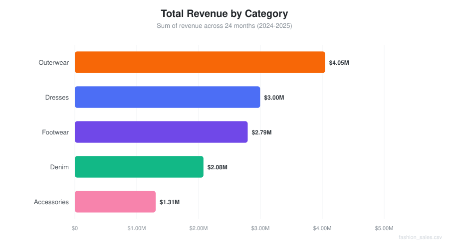
Total revenue by category
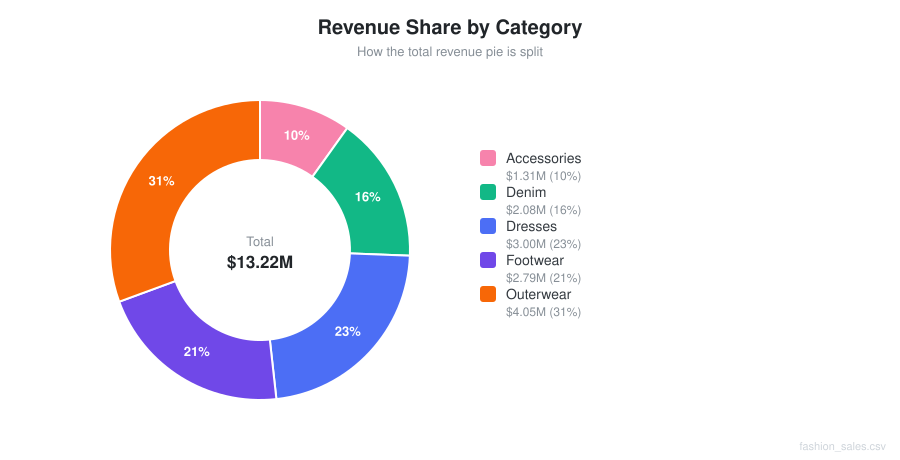
Share of total revenue by category
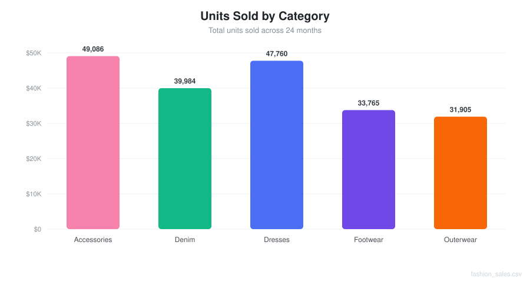
Units sold by category
Category breakdown
Category
Revenue
Units
Avg Price
Avg Disc.
Rating
Return Rate
Outerwear
$4,045,992
31,905
$126.81
25.0%
4.23
14.1%
Dresses
$2,995,076
47,760
$62.71
22.3%
4.23
21.9%
Footwear
$2,794,483
33,765
$82.76
20.8%
4.20
22.4%
Denim
$2,078,650
39,984
$51.99
22.9%
4.18
14.5%
Accessories
$1,306,281
49,086
$26.61
21.8%
4.25
13.9%
What this means: Outerwear leads on revenue, but the ranking by
units can differ from the ranking by revenue because higher-priced
items earn more per unit. Use this table to see which categories are
"high volume / low price" versus "low volume / high price".
Sales by Channel: Online vs Store
How the two sales channels compare.
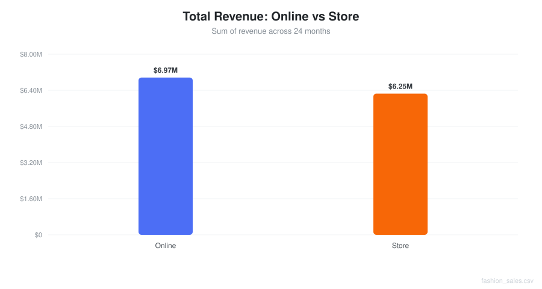
Revenue by channel
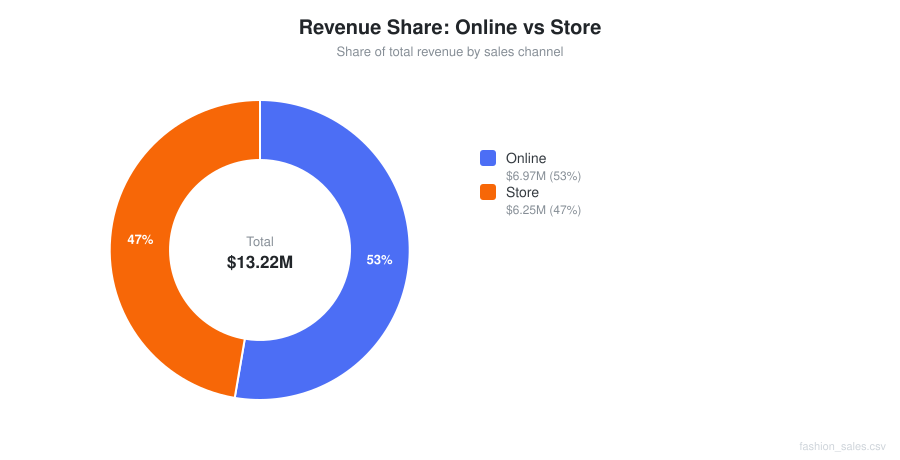
Revenue share by channel
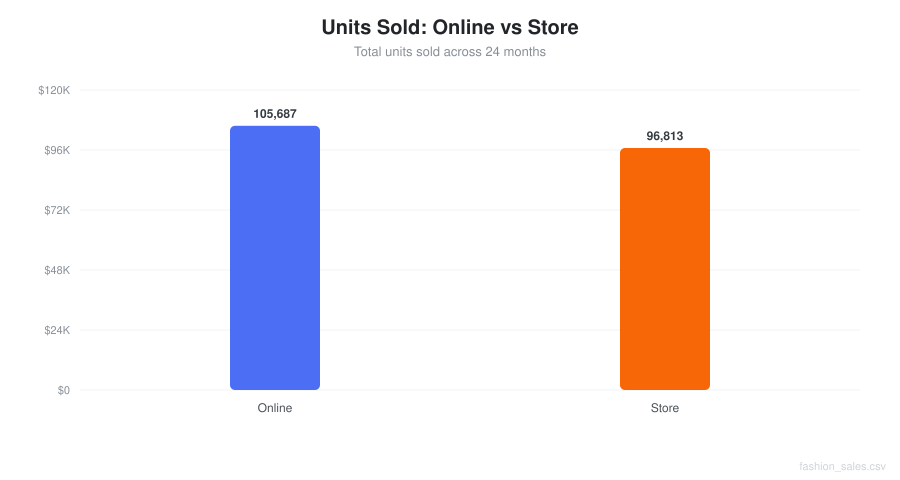
Units sold by channel
Channel
Revenue
Units
Avg Price
Disc.
Ret. Rate
Online
$6,966,152
105,687
$65.91
21.1%
4.15
24.7%
Store
$6,254,329
96,813
$64.60
24.0%
4.29
10.0%
What this means:Online generates more revenue
($6,966,152 vs $6,254,329).
Compare the average selling price and return rate columns to see
whether one channel sells pricier items or has more returns.
Monthly Sales Trends
How sales move month to month across the two years.
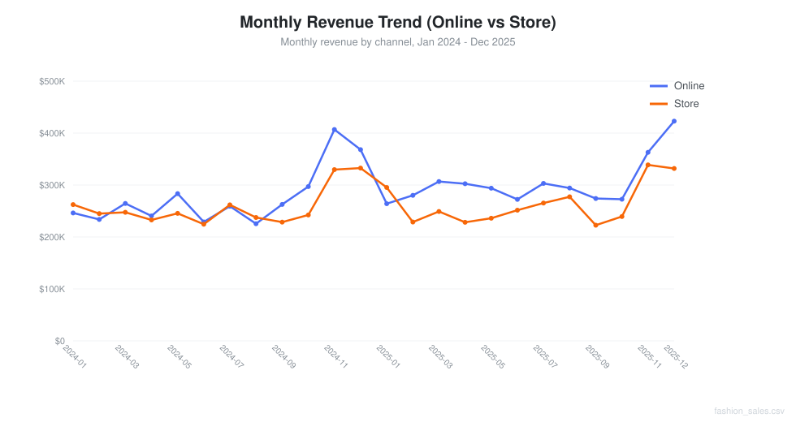
Monthly revenue: Online vs Store
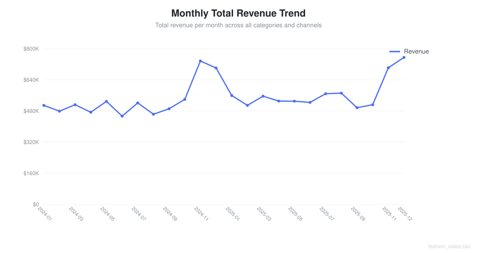
Total monthly revenue
What this means: The strongest month was 2025-12
($754,943) and the weakest was 2024-06
($453,369). Look for repeating up/down patterns —
these are seasonal effects (e.g., colder months lifting Outerwear).
Average Selling Price
The typical price customers actually pay, by category.
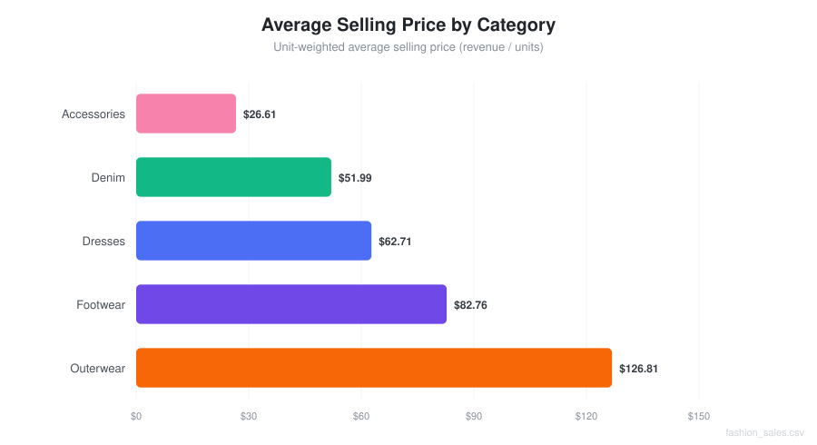
Average selling price by category
What this means: Average selling price = total revenue ÷ total units.
It already reflects discounts, so it is the real realized price — not the
sticker (list) price. Categories with a high average price contribute more
revenue per item sold.
Discount Analysis
Does discounting actually lift sales, and where does revenue come from?
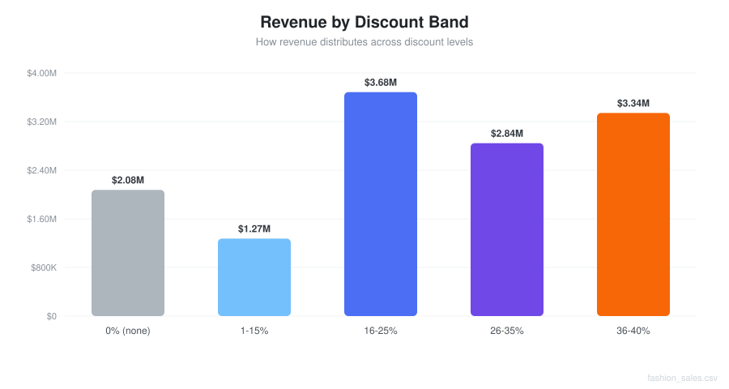
Revenue by discount band
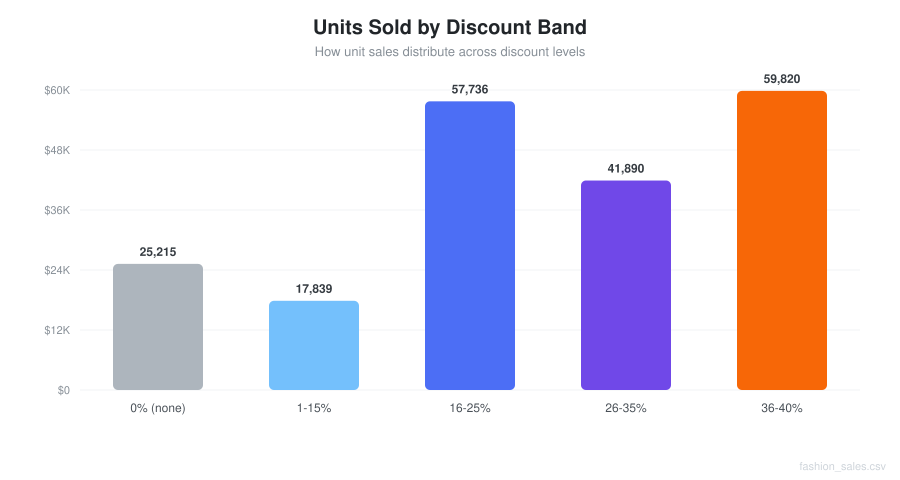
Units by discount band
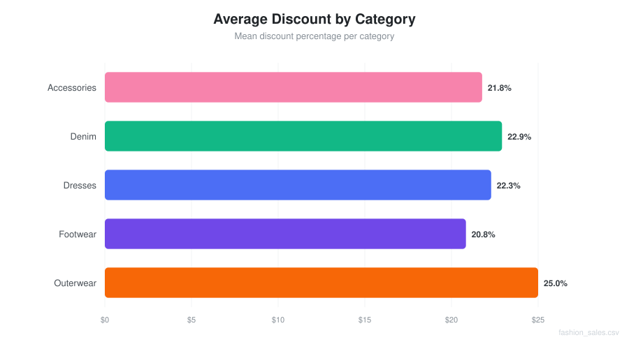
Average discount by category
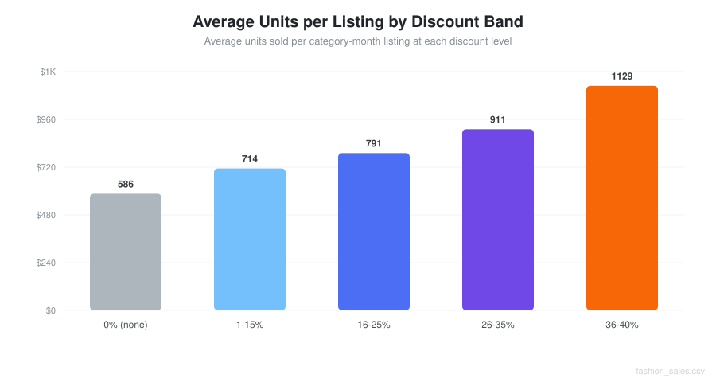
Avg units per listing by discount band
Discount band breakdown
Discount Band
Listings
Revenue
Units
Avg Rev / Listing
0% (none)
43
$2,076,516
25,215
$48,291.08
1-15%
25
$1,274,840
17,839
$50,993.60
16-25%
73
$3,684,265
57,736
$50,469.39
26-35%
46
$2,844,001
41,890
$61,826.11
36-40%
53
$3,340,859
59,820
$63,035.07
What this means: The 16-25% band brings in the most revenue.
The correlation between discount and units sold is
+0.51 (a fairly strong positive).
A value near 0 means bigger discounts are not strongly tied to selling more
units in this dataset — a signal that discounting may be eroding margin
without a clear volume payoff.
Year-over-Year Growth
How revenue changed from 2024 to 2025, overall and by category.
Total revenue grew by
+6.4% from 2024 to 2025. The fastest-growing category was
Dresses (+8.7%), while
Footwear grew the least
(+5.1%).
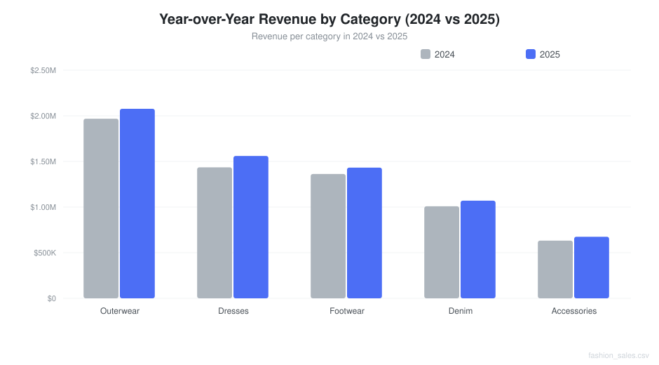
Revenue by category: 2024 vs 2025
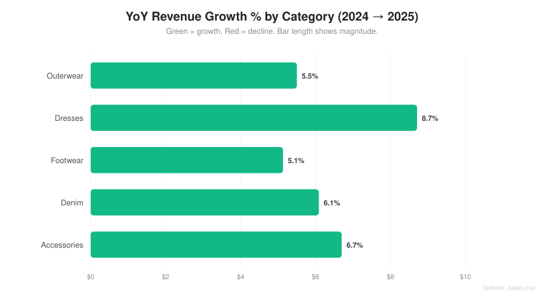
YoY growth % by category
Growth by category
Category
2024 Revenue
2025 Revenue
Growth %
Dresses
$1,435,049
$1,560,027
+8.7%
Accessories
$631,974
$674,307
+6.7%
Denim
$1,008,615
$1,070,034
+6.1%
Outerwear
$1,968,818
$2,077,174
+5.5%
Footwear
$1,362,279
$1,432,204
+5.1%
Category × Channel Heatmap
Where revenue concentrates — which categories sell best in each channel.
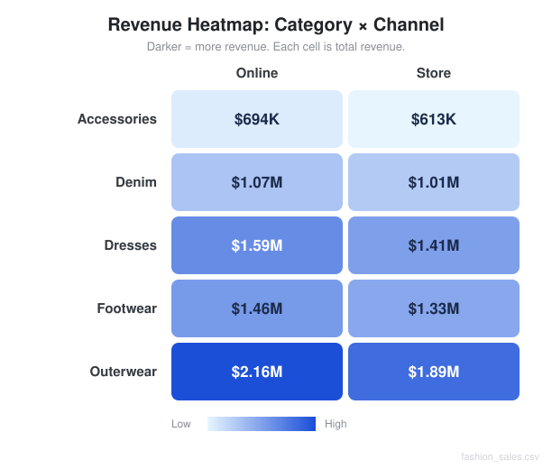
Revenue heatmap: category vs channel
Revenue matrix
Category
Online
Store
Accessories
$693,555
$612,727
Denim
$1,068,697
$1,009,953
Dresses
$1,585,366
$1,409,710
Footwear
$1,459,927
$1,334,556
Outerwear
$2,158,608
$1,887,384
What this means: Each cell is the total revenue for that category in that
channel. Darker cells = bigger sellers. This quickly reveals, for example, whether a
category over-indexes Online vs Store.
Ad-Spend ROI by Category
Which categories turn marketing dollars into the most revenue?
Overall, every $1 of ad spend returns 5.66x in revenue
(ROAS). The most efficient category is Outerwear at
8.52x; the least efficient is
Accessories at 2.81x.
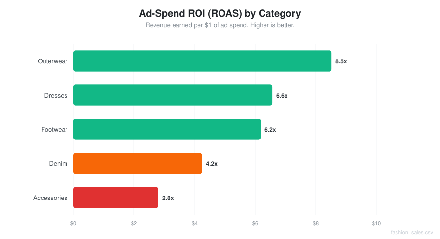
ROAS by category
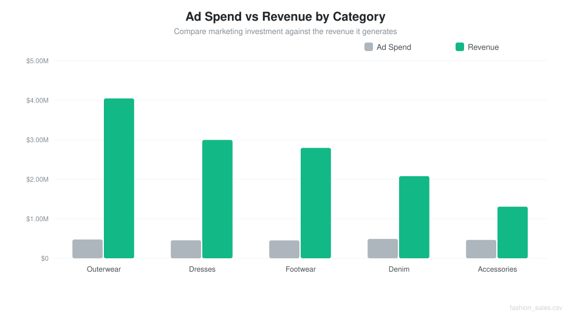
Ad spend vs revenue by category
ROI breakdown
Category
Ad Spend
Revenue
ROAS
Revenue after Ads
Outerwear
$474,890
$4,045,992
8.52x
$3,571,102
Dresses
$456,100
$2,995,076
6.57x
$2,538,976
Footwear
$452,080
$2,794,483
6.18x
$2,342,403
Denim
$489,100
$2,078,650
4.25x
$1,589,550
Accessories
$465,360
$1,306,281
2.81x
$840,921
ROAS (Return on Ad Spend) = revenue ÷ ad spend. An ROAS of 3x means
each $1 of advertising produced $3 of revenue.
Other Useful Signals
Quick correlations that hint at what drives results.
Ratings → Returns
Correlation -0.35 (a moderate negative).
Higher-rated products tend to get returned less often.
Ad Spend → Revenue
Correlation +0.21 (a weak positive).
More ad spend is associated with higher revenue — marketing appears to pay off.
Ad Spend → Units
Correlation +0.25 (a weak positive).
Rating → Units
Correlation +0.13 (a weak positive).
How to Read This Report
Revenue = units sold × sale price, summed. It is the top-line sales figure.
Units = number of items sold (volume, ignoring price).
Average Selling Price = total revenue ÷ total units (the real price paid).
Discount % = percent off the list price.
Return Rate = share of items returned (quality / satisfaction signal).
Correlation ranges from −1 to +1: near 0 = no link, near ±1 = strong link.
Source data: fashion_sales.csv (240 rows, unmodified).
This report was generated by sales_analysis.py.
Charts are available as both vector SVG (in charts/) and
high-resolution PNG (in charts_png/).